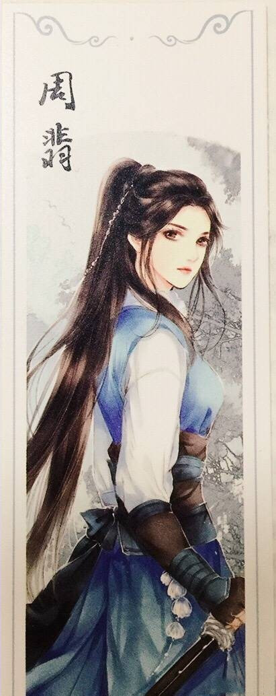
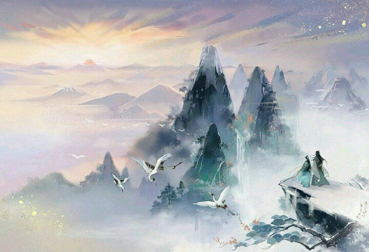

天光若死
If Light Dead
“终有一天，你会跨过静谧无声的洗墨江，离开群山环抱的旧桃源，来到无边阴霾的夜空之下。你会目睹无数不可攀爬之山相继倾覆，不可逾越之海干涸成田，你要记得，你的命运悬在刀尖上，而刀尖须得永远向前。” "One day, you will cross the quiet and silent River for Cleaning Brushes, leave the old Peach Blossom Spring surrounded by mountains, and come to the endless hazy night sky. You will witness countless unclimbable mountains overturning one after another, and the insurmountable sea drying up into fields , You must remember that your destiny hangs on the tip of the broadsword and the tip of the broadsword must always move forward." “愿你在冷铁卷刃前，得以窥见天光。” "May you get a glimpse of the sky before the broadsword blade has turned."
开卷于熹微 初光刃头淬 I open the book in the dim light of dawn,the blade is being tempered with the first faint rays of dawn 洗墨江阔绝 阔绝外 人间恢恢 The river for Cleaning Brushes is extremely broad,beyond vast expanses is the magnificent world 天地展陈于前 宇浩人微 Heaven and earth is unfolded and displayed in front of me,the universe is vast and the people are tiny 白虹开道 残霞断尾 White rainbow clear the way,vanishing sunset glow bring up the rear 少年刀骨 为清浊尺规 The bone of a young man's broadsword is a ruler that distinguishing pure from turbid 肩上风与尘 眸间星与月 Wind and dust on shoulders,stars and moon in eyes 迎头层云压 铮铮立脊背 Head-on stratus pressure,the back of the clank stood upright 自阖目横刃去 雪破霜摧 Close eyes and Swing the broadsword horizontally,the snow is broken and the frost is destroyed 零碎川河 天堑南北 Fragmented rivers are natural moat, separating the north and the south 心头血沸 踏平山巍巍 Blood boils in my heart,then my treading makes the towering mountain high as the plain 清浊自有分明现 凡眼却难证是非 Pure and impure have its own distinct appearance,but it is difficult to judge right and wrong with ordinary people's eyes 如若举世漆瞑中遐寐 纵有清明亦孱微 If the world sleeps in the dark with clothes on,even if there are purity and brightness,it will be insignificant 前人风骨点为灯 少年烧魄赴以追 Predecessors'strength of character burn as light,a young man burn his soul to overtake them 肝胆燃作长明火 天光若死我为辉 The Liver and Gallbladder burn into a long eternal fire,I will become the source of light if light dead 清浊自有分明现 凡眼却难证是非 Pure and impure have its own distinct appearance,but it is difficult to judge right and wrong with ordinary people's eyes 如若举世漆瞑中遐寐 纵有清明亦孱微 If the world sleeps in the dark with clothes on,even if there are purity and brightness,it will be insignificant 前人风骨点为灯 少年烧魄赴以追 Predecessors'strength of character burn as light,a young man burn his soul to overtake them 肝胆燃作长明火 天光若死我为辉 The Liver and Gallbladder burn into a long eternal fire,I will become the source of light if light dead 清浊自有分明现 凡眼却难证是非 Pure and impure have its own distinct appearance,but it is difficult to judge right and wrong with ordinary people's eyes 如若举世漆瞑中遐寐 纵有清明亦孱微 If the world sleeps in the dark with clothes on,even if there are purity and brightness,it will be insignificant 梦中曾有幸一瞥 清平人间 天下无匪 I was lucky enough to have a glimpse of the world without bandits,that is tranquil and peaceful 暝暝长夜卒星火 幸是我 刀有余辉 The dim long night drowned the starlight,fortunately, my broadsword has afterglow